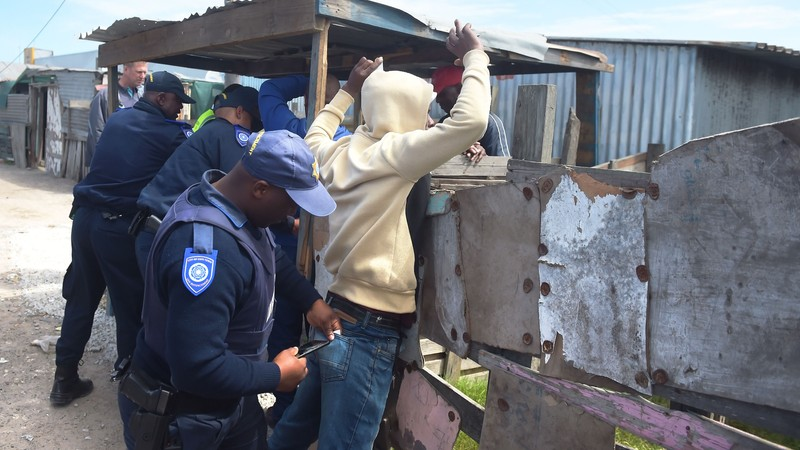

vision
The Anti-Crime Program is a joint South African initiative that promotes a systematic approach to violence and crime prevention, combining the strengths and skills of actors from a variety of sectors. together. The program facilitates joint action between and among state and non-state actors to make South African communities safer 
Our Mission
The organisation is an online knowledge sharing and networking portal for community safety, violence and crime prevention practitioners from government, civil society and the research community in South Africa. \ The portal focuses on prevention methods as long-term sustainable solutions to violence and crime
What we offer
- Empower young people to develop resilience through their peers
- Collaborate with children in rights-based and GBV prevention campaigns
- Strengthen the capacity of local authorities in preventing
- Strengthen territorial approaches through collaboration between municipalities and CSOs
- Support the implementation and strategic funding of national prevention policies
- Support the evidence-based implementation of the Integrated Crime and Violence Prevention Strategy and the Comprehensive National Prevention Strategy (Implementation Strategy for the NSP Gender-Based Violence Prevention Pillar)
The Management
- Lefa Mashabela - CEO
- Precious Swafo - Project Director
- Sizwe Radebe - Marketing Director